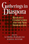

|
Religion
and Cultural Freedom
Adams, E. M. 208 pp • 6x9 • Fall
1993
cloth 978-1-56639-051-4
|

|
American Culture and Religious Diversity
A Saudi Perspective
Alhomoudi, Fahad
176 pp • 6x9 • Fall 2011
paper 978-0-931214-13-4 |
 |
Voices
of the Religious Left
A Contemporary Sourcebook
edited by Alpert, Rebecca T. 304 pp •
7x10 • Spring 2000
paper 978-1-56639-757-5
cloth 978-1-56639-756-8
|
 |
Insane
Therapy
Portrait of a Psychotherapy Cult
Ayella, Marybeth F. 213 pp • 6x9 •
Spring 1998
paper 978-1-56639-601-1
cloth 978-1-56639-600-4
|

|
Creating a Buddhist Community
A Thai Temple in Silicon Valley
Bao, Jiemin
204 pp • 5.5x8.25 • Spring 2015
paper 978-1-4399-0955-3
cloth 978-1-4399-0954-6 |
 |
Building
the Beloved Community
Maurice McCrackin's Life for Peace and Civil Rights
Bechtel, Judith A. and Robert M. Coughlin, foreword by Daniel Berrigan
288 pp • Spring 1991
cloth 978-0-87722-783-0 |
 |
Liberation
Theology
Essential Facts about the Revolutionary Religious Movement in
Latin America and Beyond
Berryman, Phillip 240 pp • 5x8 •
Spring 1987
cloth 978-0-87722-479-2 |

|
St. Peter's Church
Faith in Action for 250 Years
Biddle, Cordelia Frances, Elizabeth S. Browne, Alan J. Heavens and Charles P. Peitz
272 pp • 8x10 • Fall 2011
cloth 978-1-43990-795-5 |
|
Social
Justice and Church Authority
The Public Life of Archbishop Robert E. Lucey
Bronder, Saul E. 244 pp • Fall 1981
cloth 978-0-87722-239-2 |

|
The Enigmatic Academy
Class, Bureaucracy, and Religion in American Education
Churchill, Christian J., and Gerald E. Levy
234 pp • 6x9 • Spring 2012
paper 978-1-4399-0784-9
cloth 978-1-4399-0783-2 |
 |
Jesus, Jobs, and Justice
African American Women and Religion
Collier-Thomas, Bettye
736 pp • 6.25x9.125 • Fall 2013
paper 978-1-4399-1105-1
|
 |
A
Revolution of the Heart
Essays on the Catholic Worker
edited by Coy, Patrick G., foreword by Jim Douglass 408
pp • Spring 1988
cloth 978-0-87722-531-7 |
 |
Religion
and Radical Politics
An Alternative Christian Tradition in the United States
Craig, Robert H. 320 pp • 6x9 •
Fall 1992
paper 978-1-56639-335-5
cloth 978-0-87722-973-5
|
 |
Classical
Hindu Mythology
A Reader in the Sanskrit Puranas
edited by Dimmit, Cornelia, translated by J. A. B van Buitenen
388 pp • 6x9 • Spring 1978
paper 978-0-87722-122-7
cloth 978-0-87722-117-3
|
|
God Talk
Experimenting with the Religious Causes of Public Opinion
Djupe, Paul A. and Brian R. Calfano
276 pp • 6x9 • Fall 2013
paper 978-1-4399-0866-2
cloth 978-1-4399-0865-5 |

|
Religion and Political Tolerance in America
Advances in the State of the Art
edited by Djupe, Paul A.
270 pp • 6x9 • Spring 2015
paper 978-1-4399-1233-1
cloth 978-1-4399-1232-4 |
|
Christian
Pacifism
Dombrowski, Daniel A. 240 pp • Spring
1991
cloth 978-0-87722-802-8 |
 |
Constructing Muslims in France
Discourse, Public Identity, and the Politics of Citizenship
Fredette, Jennifer
222 pp • 6x9 • Fall 2013
paper 978-1-4399-1029-0
cloth 978-1-4399-1028-3 |

|
Trilogy of Social Ethics
Orthodox - Catholic - Protestant
Gabriel, Ingeborg G., Ulrich H.J. Körtner and Alexandros K. Papaderos
320 pp • 6x9 • Fall 2013
paper 978-0-931214-16-5 |
 |
Evil
and the Evidence for God
The Challenge of John Hick’s Theodicy
Geivett, R. Douglas, afterword by John Hick 288
pp • 6x9 • Fall 1993
paper 978-1-56639-397-3
cloth 978-1-56639-094-1
|

|
The Protestant Ethic Revisited
Gorski, Philip S.
342 pp • 6x9 • Fall 2011
paper 978-1-4399-0190-8
cloth 978-1-4399-0189-2
|

|
The Eternal Present of Sport
Rethinking Sport and Religion
Grano, Daniel A.
288 pp • 6x9
• Spring 2017
paper 978-1-4399-1280-5
cloth 978-1-4399-1279-9
|
|
Vodou Songs in Haitian Creole and English
Hebblethwaite, Benjamin
396 pp • 6x9 • Fall 2011
paper 978-1-4399-0602-6
cloth 978-1-4399-0601-9
|
|
Faith,
Reason, and Skepticism
edited by Hester, Marcus 192 pp • Fall
1991
cloth 978-0-87722-853-0 |
 |
It
Comes from the People
Community Development and Local Theology
Hinsdale, Mary Ann, Helen M. Lewis and S. Maxine Waller 400
pp • 6x9 • Fall 1994
paper 978-1-56639-212-9
cloth 978-1-56639-211-2
|
 |
Catholic
Social Teaching and Economic Theory
Paradigms in Conflict
Hobgood, Mary E., foreword by Larry L. Rasmussen 256
pp • Fall 1990
cloth 978-0-87722-754-0 |
 |
In
Washington but Not of It
The Prophetic Politics of Religious Lobbyists
Hofrenning, Daniel J. B. 256 pp • 5.5x8.25
• Spring 1995
paper 978-1-56639-304-1
cloth 978-1-56639-303-4 |
 |
Church and State in the City
Catholics and Politics in Twentieth-Century San Francisco
Issel, William
330 pp • 6x9 • Fall 2012
paper 978-1-4399-0992-8
cloth 978-1-4399-0991-1
|

|
For Both Cross and Flag
Catholic Action, Anti-Catholicism, and National Security Politics in World War II San Francisco
Issel, William
216 pp • 5.5x8.25 • Fall 2009
cloth 978-1-4399-0028-4
|

|
Nearest East
American Millennialism and Mission to the Middle East
Kieser, Hans-Lukas
224 pp • 6x9 • Spring 2010
paper 978-1-4399-0223-3
cloth 978-1-4399-0222-6
|
 |
Women
in the Sanctuary Movement
Lorentzen, Robin 240 pp • Spring 1991
cloth 978-0-87722-768-7 |
 |
Coping
with Poverty
Pentecostals and Christian Base Communities in Brazil
Mariz, Cecília Loreto 208 pp • 5.5x8.25
• Fall 1993
paper 978-1-56639-113-9
cloth 978-1-56639-112-2 |
 |
The
Case Against Christianity
Martin, Michael 288 pp • 5.5x8.25 •
Spring 1991
paper 978-1-56639-081-1
cloth 978-0-87722-767-0
|
 |
Atheism
A Philosophical Justification
Martin, Michael 254 pp • 6x9 • Fall
1989
paper 978-0-87722-943-8
cloth 978-0-87722-642-0
|
 |
Revelation
in Religious Belief
Mavrodes, George I. 168 pp • Spring 1988
cloth 978-0-87722-545-4 |

|
Interfaith Dialogue at the Grass Roots
Preface by Leonard Swidler
Mays, Rebecca Kratz
142 pp • 6x9 • Spring 2009
paper 978-0-931214-11-0 |
 |
Pentecostal
Catholics
Power, Charisma, and Order in a Religious Movement
McGuire, Meredith B. 1982
cloth 978-0-87722-235-4 |
 |
Las
Hermanas
Chicana/Latina Religious-Political Activism in the U.S. Catholic
Church
Medina, Lara 232 pp • 5.5x8.25 •
Spring 2004
paper 978- 1-59213-483-0
cloth 978-1-59213-250-8
|
 |
Holy
Leisure
Recreation and Religion in God’s Square Mile
Messenger, Troy 192 pp • 6x9 • Fall
2000
paper 978-1-56639-841-1
|
|
The
Religious Challenge to the State
edited by Moen, Matthew C. and Lowell S. Gustafson 320
pp • Fall 1991
cloth 978-0-87722-856-1 |
|
Afro-Caribbean Religions
An Introduction to Their Historical, Cultural, and Sacred Traditions
Murrell, N. Samuel
440 pp • 6x9 • Fall 2009
paper 978-1-4399-0041-3
cloth 978-1-4399-0040-6
|
 |
The
Chanting Down Babylon
The Rastafari Reader
edited by Murrell, N. Samuel, William D. Spencer and Adrian Anthony McFarlane467 pp • 7x10 • Fall 1998
paper 978-1-56639-584-7
cloth 978-1-56639-583-0
|
 |
The Muslim Question in Europe
Political Controversies and Public Philosophies
O’Brien, Peter
318 pp • 6x9 • Spring 2016
paper 978-1-4399-1277-5
cloth 978-1-4399-1276-8
|
 |
Theologies
and Liberation in Peru
The Role of Ideas in Social Movements
Peña, Milagros 240 pp • 5.5x8.25 •
Spring 1995
cloth 978-1-56639-294-5 |
 |
Breaking
Bread
The Catholic Worker and the Origin of Catholic Radicalism in America
Piehl, Mel 225 pp • Fall 1982
paper 978-0-87722-353-5
cloth 978-0-87722-257-6 |
 |
The
Transformation of American Catholic Sisters
Quiñonez, Lora Ann and Mary Daniel Turner 224
pp • Fall 1991
paper 978-1-56639-074-3
cloth 978-0-87722-865-3
|
 |
Animal
Sacrifices
Religious Perspectives on the Use of Animals in Science
edited by Regan, Tom, introduction by John Bowker 288
pp • Spring 1986
paper 978-0-87722-511-9
cloth 978-0-87722-411-2 |
|
The
Old Christian Right
The Protestant Far Right from the Depression to the Cold War
Ribuffo, Leo 388 pp • Spring 1983
paper 978-0-87722-598-0
cloth 978-0-87722-297-2 |
 |
Islam
in Urban America
Sunni Muslims in Chicago
Schmidt, Garbi 256 pp • 6x9 • Fall
2003
paper 978-1-59213-224-9
cloth 978-1-59213-223-2
|
|
American Heathens
The Politics of Identity in a Pagan Religious Movement
Snook, Jennifer
242 pp • 6x9 • Spring 2015
paper 978-1-4399-1097-9
cloth 978-1-4399-1096-2 |

|
Club Modernity for Reluctant Christians
Swidler, Leonard
160 pp • 6x9 • Fall 2011
paper 978-0-931214-12-7 |
 |
The
Study of Religion in an Age of Global Dialogue
Swidler, Leonard and Paul Mojzes 240 pp •
6x9 • Fall 2000
paper 978-1-56639-793-3
cloth 978-1-56639-792-6 |
 |
Voices
from the Catholic Worker
edited by Troester, Rosalie Riegle 632 pp
• 6x9 • Fall 1993
paper 978-1-56639-059-0
cloth 978-1-56639-058-3 |
|  |
Gatherings
in Diaspora
Religious Communities and the New Immigration
edited by Warner, Stephen R. and Judith G. Wittner 416
pp • 6x9 • Spring 1998
paper 978-1-56639-614-1
cloth 978-1-56639-613-4
|
 |
"Other
Sheep I Have"
The Autobiography of Father Paul M. Washington
Washington, Paul M. with David McI. Gracie, afterword by Barbara Harris
280 pp • 5.5x8.25 • Spring 1994
paper 978-1-56639-178-8
cloth 978-1-56639-177-1
|
 |
The
Social Gospel
Religion and Reform in Changing America
White, Jr., Ronald C. and C. Howard Hopkins Spring
1975
paper 978-0-87722-084-8
cloth 978-0-87722-083-1
|
 |
Religion
and Economic Justice
edited by Zweig, Michael 272 pp • 6x9
• Fall 1991
paper 978-1-56639-003-3
cloth 978-0-87722-847-9 |